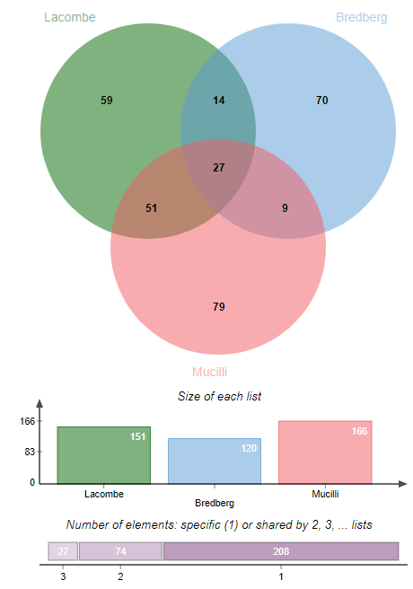

Annotating a protein list identified by LC-MS/MS experiments
 Valentin Loux
Valentin Loux Florence Combes
Florence Combes David Christiany
David Christiany Yves Vandenbrouck
Yves VandenbrouckOverview
question Questionsobjectives Objectives
How to filter out technical contaminants?
How to check for tissue-specificity?
How to perform enrichment analysis?
How to map your protein list to pathways (Reactome)?
How to compare your proteome with other studies?
requirements Requirements
Execute a complete annotation pipeline of a protein list identified by LC-MS/MS experiments
time Time estimation: 1 hour
Supporting Materials
last_modification Last modification: Jan 6, 2021
Introduction
ProteoRE Galaxy instance provides necessary tools to execute a whole annotation pipeline of a protein list identified by LC-MS/MS experiments. This activity introduces these tools and guides you through a simple pipeline using some example datasets based on the study entitled “Proteomic characterization of human exhaled breath condensate” Lacombe et al. 2018. The goal of this study was to identify proteins secreted in the respiratory tract (lung, bronchi). Samples were obtained non-invasively by condensation of exhaled air that contains submicron droplets of airway lining fluid. Two pooled samples of EBC, each obtained from 10 healthy donors, were processed. Two ‘technical’ control samples were processed in parallel to the pooled samples to correct for exogenous protein contamination. A total of 229 unique proteins were identified in EBC among which 153 proteins were detected in both EBC pooled samples. A detailed bioinformatics analysis of these 153 proteins showed that most of the proteins identified corresponded to proteins secreted in the respiratory tract (lung, bronchi).
Agenda
Get Input Datasets
For this tutorial, we will use 3 datasets: the list of proteins identified by LC-MS/MS in the exhaled breath condensate (EBC) from Lacombe et al. 2018 and two others EBC proteomes previously published (Muccilli et al. 2015 and Bredberg et al. 2011). These datasets are available from Zenodo here.
hands_on Hands-on: Data upload
- Create a new history for this tutorial and give it a name
tip Tip: Creating a new history
Click the new-history icon at the top of the history panel
If the new-history is missing:
- Click on the galaxy-gear icon (History options) on the top of the history panel
- Select the option Create New from the menu
Import the files from Zenodo or from the shared data library (ask your instructors).
https://zenodo.org/record/3405119/files/Lacombe_2018.txt https://zenodo.org/record/3405119/files/Bredberg.txt https://zenodo.org/record/3405119/files/Mucilli.txttip Tip: Importing data via links
- Copy the link location
Open the Galaxy Upload Manager (galaxy-upload on the top-right of the tool panel)
- Select Paste/Fetch Data
Paste the link into the text field
Press Start
- Close the window
By default, Galaxy uses the URL as the name, so rename the files with a more useful name.
tip Tip: Importing data from a data library
As an alternative to uploading the data from a URL or your computer, the files may also have been made available from a shared data library:
Go into Shared data (top panel) then Data libraries
Find the correct folder (ask your instructor)
- Select the desired files
- Click on the To History button near the top and select as Datasets from the dropdown menu
- In the pop-up window, select the history you want to import the files to (or create a new one)
- Click on Import
Filtering out technical contaminants
A group of 10 proteins were identified in both “technical” control samples with an enrichment in EBC samples below a fixed threshold. These proteins were thus considered to be technical contaminants (see list of proteins in Table 4 in Lacombe et al. 2018) and have to be removed from the initial dataset.
hands_on Hands-on: Remove the contaminants
- Filter by keywords and/or numerical value tool with the following parameters:
- param-file “Input file”:
Lacombe_2018.txt- “Operation”:
Discard- param-repeat “Insert Filter by keywords”
- “Column number on which to apply the filter”:
c1- “Search for exact match ?”:
No- “Enter keywords”:
copy/paste
- “Copy/paste keywords to find”:
P04264 P35908 P13645 Q5D862 Q5T749 Q8IW75 P81605 P22531 P59666 P78386comment Outputs
- Filtered_Lacombe_2018.txt - Discarded_lines: output list with the ten proteins (contaminants) removed from the original dataset (10 proteins)
- Filtered_Lacombe_2018.txt: output contains the remaining proteins that will be considered for further analysis (151 proteins)
Check for the presence of biological contaminants
As EBC samples are obtained from air exhaled through the oral cavity, and even though the RTube collection device contained a saliva trap to separate saliva from the exhaled breath, contamination with salivary proteins had to be assessed. We decided to check the expression pattern for each protein of the “core” EBC proteome using the The Human Protein Atlas (HPA, Uhlén et al. 2005). As HPA is indexed by Ensembl gene identifier (ENSG) we first need to convert Uniprot ID to Ensembl gene (ENSG). Secondly, check for proteins which are highly expressed in the salivary glands as reported by HPA, then in a third step, we filter out these proteins.
hands_on Hands-on: Convert Uniprot ID to Ensembl gene ID
- ID Converter tool with the following parameters:
- “Enter IDs”:
Input file containing IDs
- param-file “Select your file”:
Filtered_Lacombe_2018.txtoutput from Filter by keywords tool- “Column number of IDs to map”:
c1- “Species”:
Human (Homo sapiens)
- “Type/source of IDs”:
Uniprot accession number (e.g. P31946)- “Target type of IDs you would like to map to”:
- param-check
Ensembl gene ID (e.g. ENSG00000166913)comment Output
In the output file, a new column which contains Ensembl IDs was added (at the end)
hands_on Hands-on: Check for proteins highly expressed in salivary glands
- Add expression data tool with the following parameters:
- “Enter your IDs”:
Input file containing your IDs- param-file “Select your file”:
ID Converter on data ..from ID Converter tool- “Column IDs”:
c4(column containing Ensembl IDs)- “Does file contain header”:
Yes- “Select informareactometion to add to your list”:
- param-check
Gene name- param-check
Gene description- param-check
RNA tissue category (according to HPA)- param-check
RNA tissue specificity abundance in "Transcript Per Millioncomment Outputs
In the output file, four columns were added (5, 6, 7 and 8) corresponding to the retrieved information from HPA.
Examine the output table. Note that in the last column of the list (column 8), we see that AMY1B, CALML5, PIP, ZG16B, CST4, MUC7, CST1 and CST2 have been reported as highly enriched in salivary gland with elevated RNA transcript specific Transcript Per Million (TPM) value for each, suggesting that these proteins may come from the saliva and not from the exhaled breath condensate. We will remove these biological contaminants from our initial protein set.
[..]
P04745 Alpha-amylase 1 23 ENSG00000174876 AMY1B Amylase, alpha 1B (salivary) Tissue enriched salivary gland: 1847.5
[..]
Q9NZT1 Calmodulin-like protein 5 8 ENSG00000178372 CALML5 Calmodulin-like 5 Group enriched salivary gland: 262.7;skin: 651.2
[..]
In the next step, we will filter the data to remove these biological contaminants (i.e. proteins highly expressed in salivary glands)
by filtering out the lines that contain the word salivary in the column of RNA transcript specific TPM.
hands_on Hands-on: Filter the data to remove the biological contaminants
- Filter by keywords and/or numerical value tool with the following parameters:
- param-file “Input file”:
Add expression data on data ..from Add expression data tool- “Operation”:
Discard- param-repeat “Insert Filter by keywords”
- “Column number on which to apply the filter” :
c8(column with RNA transcript specific TPM)- *“Search for exact match ?” :
No- “Enter keywords”:
copy/paste
- “Copy/paste keyword to fine”:
salivarycomment Outputs
Two output files are created:
- Filtered Add expression data on data .. - Discarded lines (12 proteins)
- FilteredAdd expression data on data .. (157 proteins)
tip Tip: Using genes instead of keywords
Note also that a list of “gene” may have been entered (selected on the basis of their TPM value) applied to column 5 instead of the keywords “salivary” to column 8, as it has been done in Lacombe et al. 2018.
Functional annotation of the EBC proteome (enrichment analysis)
The resulting list of 157 proteins identified in the two pooled EBC samples (excluding the 10 contaminants proteins) is now submitted to Gene Ontology (GO)-term enrichment analysis to determine functions that were significantly enriched in our EBC proteomic dataset compared to the lung proteome (corresponding to tissue-specific genes extracted from the Human Protein Atlas). To do so, we first build a lung reference proteome (that should be more representative of the studied sample rather than a full human proteome) that will be used for enrichment analysis performed with the ClusterProfiler tool (based on the R package clusterProfiler).
hands_on Hands-on: Build a lung reference proteome as a background for GO terms enrichment analysis
- Build tissue-specific expression dataset tool with the following parameters:
- param-select “Experimental data source (antibody- or RNAseq-based)”:
Expression profiles based on immunohistochemistry- param-select “Select tissue”:
LungandBronchus(you can start typing to filter the list)- “Expression level”:
- param-check
High- param-check
Medium- param-check
Low- “Reliability score”:
- param-check
Enhanced- param-check
SupportedOutput
- Tissue-specific expression from IHC: List of the selected proteins. 6 columns: ‘Gene’, ‘Gene name’ and the retrieved info from HPA.
Note that expression information about respiratory cell types is retrieved (column 4; e.g. macrophages, pneumocytes, respiratory epithelial cells) that could be used for further refinement of your reference background.
As the ClusterProfiler tool (which we will use for the enrichment analysis) does not consider ENSG (Ensembl gene) identifiers as input, we need to convert IDs into either entrez Gene ID or Uniprot accession number.
hands_on Hands-on: Convert Ensembl ID to Uniprot and Entrez Gene ID
- ID Converter tool with the following parameters:
- “Enter IDs”:
Input file containing IDs- param-file “Select your file”:
Tissue-specific expression from IHCfrom Build tissue-specific expression dataset tool- “Column number of IDs to map”:
c1- “Species”:
Human (Homo sapiens)
- “Type/source of IDs”:
Ensembl gene ID (e.g. ENSG00000166913)
- “Target type of IDs you would like to map to”:
- param-check
UniProt accession number (e.g. P31946)- param-check
Entrez gene ID (e.g. 7529)comment Output
In the output file, 2 new columns have been added with the ID retrieved thanks to the conversion.
Now we can perform the GO terms analysis. Input list is the EBC proteome to be analyzed after technical and biological contaminants removal, which is the output of biological contaminants filter step.
hands_on Hands-on: GO terms analysis
- GO terms classification and enrichment analysis tool with the following parameters:
- “Enter your IDs”:
Input file containing your IDs- param-file “Choose a file that contains your list of IDs”:
Filtered_Add expression data on data ..from Filter by keywords tool- “Column number of IDs”:
c1- “Select type/source of IDs”:
UniProt accession number (e.g.:P31946)- “Species”:
Homo sapiens- “Select GO terms category”:
- param-check
Cellular Component- param-check
Biological process- param-check
Molecular Function- “Perform GO categories representation analysis?”:
Yes- “Ontology level”:
3- “Perform GO categories enrichment analysis?”:
Yes
- “Define your own background IDs?”:
Yes
- “Enter your background IDs”:
Input file containing your background IDs- param-file “Select file that contains your background IDs list”:
ID converter on data ..from lastest ID Converter tool run- “Column number of IDs”:
c7- “Select type of background IDs”:
UniProt Accession number- “Graphical display”:
- param-check
dot-plotcomment Output
Results created in History panel are the following:
- Cluster profiler
- ClusterProfiler diagram outputs (collection dataset of all graphical outputs)
- ClusterProfiler text files (collection dataset of all text files)
The suffix “GGO” (GroupGO) corresponds to the results “GO categories representation analysis” option (performs a gene/protein classification based on GO distribution at a specific level). The suffix “EGO” (EnrichGO) corresponds to the results from the enrichment analysis (based on an over-representation test of GO terms against the lung reference background). Two types of graphical output are provided either in the form of bar-plot or dot-plot. According to this analysis, the main biological processes over-represented in EBC compared to lung were some processes related to the immune system and exocytosis (see EGO.BP.dot.png, for Enriched Biological Process GO terms dot-plot representation in png format).
Visualize EBC proteome on biological pathways (using Reactome)
The 157 proteins identified in EBC samples are now mapped to biological pathways and visualized via the web service of Reactome (Croft et al. 2013), an open access, manually curated and peer-reviewed human pathway database that aims to provide intuitive bioinformatics tools for the visualization, interpretation and analysis of pathway knowledge.
hands_on Hands-on: Protein list mapping on Reactome database
- Query pathway database [Reactome] tool with the following parameters:
- “Input IDs”:
Input file containing your IDs- param-file “Input file containing your IDs”:
Filtered_Add expression data on data ..from Filter by keywords tool- “Column number of IDs”:
c1- “Species”:
Human (Homo sapiens)
Within the Query pathway database on data .. output of the tool, you can click on a link that opens the connection on Reactome:
 .
.
Here you can explore the Reactome map of your IDs to see the context of your biological pathways.
Comparison with other proteomic datasets from previous studies
hands_on Hands-on: Lists comparison with Venn diagramm tool
- Venn diagram tool with the following parameters:
- param-repeat “Insert List to compare”
- “Enter your list”:
Input file containing your list- param-file “Select your file”:
kept_lines(output of Filter by keywords and/or numerical value tool)- “Enter the name of this list”:
Lacombe et al- param-repeat “Insert List to compare”
- “Enter your list”:
Input file containing your list- param-file “Select your file”:
output(Input dataset)- “Enter the name of this list”:
Bredberg et al- param-repeat “Insert List to compare”
- “Enter your list”:
Input file containing your list- param-file “Select your file”:
output(Input dataset)- “Enter the name of this list”:
Mucilli et alcomment Output
The Venn diagram shows the number of proteins specific and in common between the 3 lists. .
Conclusion
ProteoRE offers a panel of tools to annotate a protein list. We showed that it is possible to make ID conversion, perform tissu-expression annotation, but also Gene Ontology analysis as well as Reactome interogation. This allows the user to go deeper in the analysis of proteomics analyses results.
keypoints Key points
The Human Protein Atlas is a valuable resource for annotation and exploration of protein data
Conversion between different gene identifiers is sometimes required
The Reactome pathway database can be used to browse biological pathways
Useful literature
Further information, including links to documentation and original publications, regarding the tools, analysis techniques and the interpretation of results described in this tutorial can be found here.
References
- Uhlén, M., E. Björling, C. Agaton, C. A.-K. Szigyarto, B. Amini et al., 2005 A Human Protein Atlas for Normal and Cancer Tissues Based on Antibody Proteomics. Molecular & Cellular Proteomics 4: 1920–1932. 10.1074/mcp.m500279-mcp200
- Bredberg, A., J. Gobom, A.-C. Almstrand, P. Larsson, K. Blennow et al., 2011 Exhaled Endogenous Particles Contain Lung Proteins. Clinical Chemistry 58: 431–440. 10.1373/clinchem.2011.169235
- Croft, D., A. F. Mundo, R. Haw, M. Milacic, J. Weiser et al., 2013 The Reactome pathway knowledgebase. Nucleic acids research 42: D472–D477.
- Muccilli, V., R. Saletti, V. Cunsolo, J. Ho, E. Gili et al., 2015 Protein profile of exhaled breath condensate determined by high resolution mass spectrometry. Journal of pharmaceutical and biomedical analysis 105: 134–149.
- Lacombe, M., C. Marie-Desvergne, F. Combes, A. Kraut, C. Bruley et al., 2018 Proteomic characterization of human exhaled breath condensate. Journal of Breath Research 12: 021001. 10.1088/1752-7163/aa9e71
Feedback
Did you use this material as an instructor? Feel free to give us feedback on how it went.

Citing this Tutorial
- Valentin Loux, Florence Combes, David Christiany, Yves Vandenbrouck, 2021 Annotating a protein list identified by LC-MS/MS experiments (Galaxy Training Materials). /training-material/topics/proteomics/tutorials/proteome_annotation/tutorial.html Online; accessed TODAY
- Batut et al., 2018 Community-Driven Data Analysis Training for Biology Cell Systems 10.1016/j.cels.2018.05.012
details BibTeX
@misc{proteomics-proteome_annotation, author = "Valentin Loux and Florence Combes and David Christiany and Yves Vandenbrouck", title = "Annotating a protein list identified by LC-MS/MS experiments (Galaxy Training Materials)", year = "2021", month = "01", day = "06" url = "\url{/training-material/topics/proteomics/tutorials/proteome_annotation/tutorial.html}", note = "[Online; accessed TODAY]" } @article{Batut_2018, doi = {10.1016/j.cels.2018.05.012}, url = {https://doi.org/10.1016%2Fj.cels.2018.05.012}, year = 2018, month = {jun}, publisher = {Elsevier {BV}}, volume = {6}, number = {6}, pages = {752--758.e1}, author = {B{\'{e}}r{\'{e}}nice Batut and Saskia Hiltemann and Andrea Bagnacani and Dannon Baker and Vivek Bhardwaj and Clemens Blank and Anthony Bretaudeau and Loraine Brillet-Gu{\'{e}}guen and Martin {\v{C}}ech and John Chilton and Dave Clements and Olivia Doppelt-Azeroual and Anika Erxleben and Mallory Ann Freeberg and Simon Gladman and Youri Hoogstrate and Hans-Rudolf Hotz and Torsten Houwaart and Pratik Jagtap and Delphine Larivi{\`{e}}re and Gildas Le Corguill{\'{e}} and Thomas Manke and Fabien Mareuil and Fidel Ram{\'{\i}}rez and Devon Ryan and Florian Christoph Sigloch and Nicola Soranzo and Joachim Wolff and Pavankumar Videm and Markus Wolfien and Aisanjiang Wubuli and Dilmurat Yusuf and James Taylor and Rolf Backofen and Anton Nekrutenko and Björn Grüning}, title = {Community-Driven Data Analysis Training for Biology}, journal = {Cell Systems} }